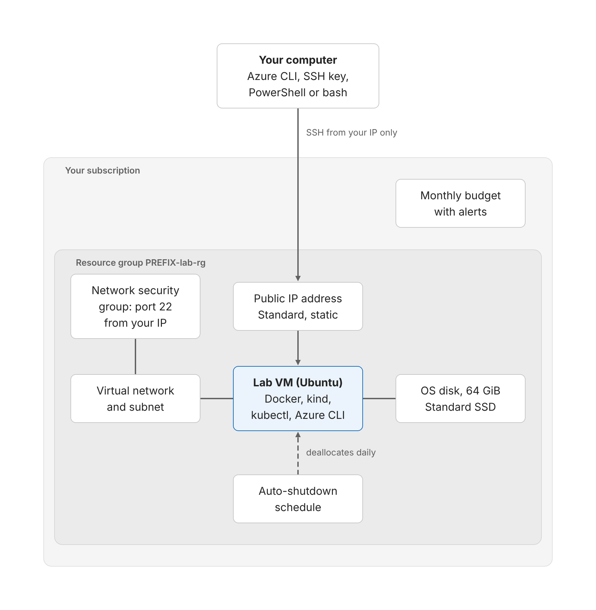

Chapter 0: lab setup
Every lab in this course runs on Azure, from a small Linux virtual machine (VM) in your own subscription. This chapter builds that VM and the guardrails that protect your monthly credit, then checks that everything later chapters need is in place.
What you will be able to do
- Explain how your credit-based subscription is billed and what happens when the credit runs out.
- Name the five cost guardrails of the course and say what each one does and does not do.
- Create the lab environment from code with one script, and stop or destroy it with another.
- Connect to the lab VM over SSH, from your own public IP address only.
- Read a readiness report and decide what to fix now and what can wait.
Before you start
Prerequisites
- An Azure subscription where you have the Owner role. Setup creates role assignments, which needs Owner (or User Access Administrator). A Visual Studio subscription with monthly credit fits, with the spending limit left on.
- On your own computer, a terminal, the Azure CLI, Terraform 1.17.0 or later, and an OpenSSH client. Choose your computer with the picker at the top of the page: every command block then shows the right variant. On Windows, the course scripts run in PowerShell, which is part of Windows. On macOS and Linux, they run in bash.
- The course files on your computer, downloaded as a zip file and extracted, or cloned with Git.
To install what is missing:
# Azure CLI, with the Windows package manager
winget install --exact --id Microsoft.AzureCLI
# Terraform: HashiCorp publishes a zip file for Windows. This puts terraform.exe in your
# user folder and adds that folder to your Path.
$tfVersion = '1.17.2'
$tfDir = Join-Path $env:LOCALAPPDATA 'Programs\Terraform'
Invoke-WebRequest "https://releases.hashicorp.com/terraform/$tfVersion/terraform_${tfVersion}_windows_amd64.zip" -OutFile "$env:TEMP\terraform.zip"
Expand-Archive "$env:TEMP\terraform.zip" -DestinationPath $tfDir -Force
[Environment]::SetEnvironmentVariable('Path', [Environment]::GetEnvironmentVariable('Path', 'User') + ";$tfDir", 'User')
# The OpenSSH client is an optional Windows feature, already added on most computers. This prints its version:
ssh -V
If ssh is not found, add the OpenSSH Client optional feature as described in Get started with OpenSSH for Windows. Open a new PowerShell window after installing the Azure CLI and Terraform, then check Terraform with terraform version.
# Azure CLI, with Homebrew
brew update && brew install azure-cli
# Terraform, from the HashiCorp tap of Homebrew
brew tap hashicorp/tap
brew install hashicorp/tap/terraform
terraform version
# The OpenSSH client ships with macOS. This prints its version:
ssh -V
# Azure CLI on Ubuntu or Debian. For other distributions, follow the Azure CLI install page.
curl -sL https://aka.ms/InstallAzureCLIDeb | sudo bash
# Terraform on Ubuntu or Debian, from the HashiCorp apt repository. For other distributions, follow the Terraform install page.
wget -O - https://apt.releases.hashicorp.com/gpg | sudo gpg --dearmor -o /usr/share/keyrings/hashicorp-archive-keyring.gpg
echo "deb [arch=$(dpkg --print-architecture) signed-by=/usr/share/keyrings/hashicorp-archive-keyring.gpg] https://apt.releases.hashicorp.com $(grep -oP '(?<=UBUNTU_CODENAME=).*' /etc/os-release || lsb_release -cs) main" | sudo tee /etc/apt/sources.list.d/hashicorp.list
sudo apt update && sudo apt install terraform
terraform version
# The OpenSSH client is part of most distributions. This prints its version:
ssh -V
If subscriptions, resource groups or regions are new to you, take the Azure Fundamentals cloud concepts path on Microsoft Learn first.
Time needed
About 90 minutes: 35 minutes of reading, 15 minutes of preparation (Terraform included), 15 minutes of waiting while Azure builds the VM and installs the tools, and 25 minutes for the lab task. The wait is a good moment for the knowledge check.
Estimated cost
Prices from the Azure Retail Prices API, pay-as-you-go, Linux, region Sweden Central, in EUR, looked up on 13 November 2026. Setup looks them up again for your own region and currency before it changes anything.
| Item | Price | When you pay |
|---|---|---|
Lab VM Standard_D2as_v5 (2 vCPUs, 8 GiB of memory) |
0.0826 per hour | Only while the VM runs |
| OS disk, 64 GiB Standard SSD (E6) | 4.3090 per month, plus 0.0018 per 10,000 disk operations | All the time, even when the VM is stopped |
| Public IPv4 address, Standard, static | 0.0044 per hour | All the time, even when the VM is stopped |
| Storage account for the Terraform state, Standard LRS, hot tier | 0.0165 per GB per month, looked up on 16 November 2026. The state takes a few kilobytes. Read and write operations are charged too, but a run makes only a few of them (price not verified) | Until you destroy the lab, but close to nothing |
| Budget, auto-shutdown schedule, resource group, network | No meter found in the price list (not verified for the auto-shutdown schedule) | Never |
For this chapter, a one-hour session costs about 0.08 for the VM, plus about 0.25 per day for the disk and the IP address for as long as the VM exists. If you keep the lab VM for a month and use it 2 hours a day, expect about 13 EUR, roughly 10% of a 130 EUR credit.
This is the cost of chapter 0 alone. The home page lists what the whole course costs. The part to plan for is ARO, in chapters 8 and 9: roughly 2.5 to 3 EUR per hour for as long as a cluster exists.
Concepts
How your subscription is billed
Azure bills each resource through meters. A VM is billed per hour of running time, a managed disk per month (shared out over the hours it exists), a static public IP address per hour, and a container registry per day. You can see every meter and its price in the Azure Retail Prices API, which is where every price in this course comes from.
On a credit-based subscription, such as the monthly credit that comes with a Visual Studio subscription, usage is charged against the credit. Three facts shape every lab in this course:
- With the spending limit on, Azure disables your services for the rest of the billing period once the credit is spent. The documentation describes VMs being stopped and deallocated and storage becoming read-only. For subscriptions with a monthly credit, the subscription is re-enabled at the start of the next billing period. Spending limit
- Some charges, such as most third-party Marketplace offers, are never covered by the credit, even with the spending limit on. Spending limit
- Credit-based subscriptions can have lower default quotas than paid ones, and some regions or services may not be available to them. Visual Studio credit
Treat the spending limit as a last resort: when it triggers, it stops everything at once, including the lab you were in the middle of.
your credit runs out on the 20th of the month. What happens to the lab VM, and when can you use it again?
Azure disables your services and stops and deallocates the VM. You can start it again once the subscription is re-enabled, at the beginning of the next billing period. Your disk is kept, so your work is still there.
Stopped is not the same as deallocated
A VM has several power states, and they are not billed the same way. States and billing of Azure VMs
| Power state | How you get there | Compute billed? |
|---|---|---|
| Running | Start the VM | Yes |
| Stopped | Shut the operating system down from inside the VM, for example sudo poweroff |
Yes, Azure still reserves the hardware |
| Deallocated | Stop the VM through Azure: the portal Stop button, az vm deallocate, or auto-shutdown |
No |
In every state, the disk and the static public IP address are still billed. Only deleting them stops those charges.
The course always stops the VM through Azure, with chapters/00-lab-setup/lab/teardown.sh stop or scripts/lab-vm.sh stop, never from inside it.
you typed sudo poweroff in the VM and the portal now shows "Stopped". Are you still paying for compute?
Yes. A VM shut down from inside the operating system keeps its hardware reservation and is still billed for compute. Deallocate it from your own computer with chapters/00-lab-setup/lab/teardown.sh stop.
The five guardrails of the course
Each guardrail covers a different failure. None of them is enough on its own.
| Guardrail | What it does | What it does not do |
|---|---|---|
| Spending limit | Stops all services when the credit is spent | Warn you early, or stop at a lower amount |
| Budget with alerts | E-mails you at 50%, 80% and 100% of the budget in actual cost, and at 100% in forecast cost | Stop anything. Cost data arrives 8 to 24 hours late and budgets are evaluated once a day |
| Auto-shutdown | Deallocates the lab VM every day at a fixed time | Stop the disk and IP charges, or stop any other resource |
| Teardown scripts | Delete what a lab created | Anything at all if you do not run them |
Tags course=aro-k8s and chapter=NN |
Let teardown and cost analysis find every course resource | Cover resource types that do not accept tags |
The budget alerts are described in Create and manage budgets. A forecast alert is the early warning: it fires when Azure predicts that your spending will reach the threshold by the end of the month, before the money is actually spent. Auto-shutdown deallocates the VM, as described in Plan to manage Azure costs.
The budget in this course covers the whole subscription, not only the lab resource group, so that it also catches resources created outside the course.
you forget the lab VM running on a Friday evening. Which guardrail stops the cost, and which one tells you about it?
Auto-shutdown deallocates the VM at the time set in .env, which stops the compute cost that evening. The budget would only tell you if the total spending crossed a threshold, and with a delay of up to a day. The disk and IP address keep costing a few cents a day until you destroy the lab.
Infrastructure as code with Terraform
Setup creates the lab from Terraform files rather than from clicks in the portal. Terraform files are declarative: they describe the end state you want (a resource group, a budget, a VM with these settings), and Terraform works out what to create, change or delete to reach it. It talks to Azure through a provider, a plugin for one platform. Here that is the azurerm provider.
Terraform records what it created in a state, which maps each resource in the files to the real resource in Azure. Each run starts with a plan: Terraform reads the real resources, compares them and the files with the state, and lists the changes it proposes. Setup prints that plan and asks you before it applies it. When nothing differs, the plan is empty and nothing changes, which is why setup is safe to run again, for example after your public IP address changes.
The state has to outlive your computer, and two runs must never change it at the same time. So setup first creates a storage account in a resource group of its own, <PREFIX>-tfstate-rg, and Terraform keeps the state there, one blob per chapter, with the azurerm backend. Terraform locks the state during a run. The account refuses account keys: you and the lab VM reach it with your Microsoft Entra ID identities and the Storage Blob Data Contributor role. Blob versioning keeps the earlier versions of the state, so a damaged state can be restored. The state lives outside the lab resource group, so destroying the lab never deletes the record of what it contained.
You will meet the same idea, describing the desired state and letting the platform converge, in chapter 2 with Kubernetes.
The lab environment looks like this:

The files are in the lab/infra folder of this chapter:
- versions.tf sets the versions of Terraform and of the azurerm provider, and declares where the state lives.
- variables.tf lists the settings that setup fills in from your
.envfile. - main.tf creates the resource group and the budget.
- lab-vm.tf creates the network, the VM, the auto-shutdown schedule and the role assignments of the VM.
- outputs.tf lists the values that Terraform prints at the end, such as the IP address of the VM.
.terraform.lock.hclrecords the exact provider version and its checksums, so that every learner gets the same provider.
On its first boot, the VM runs cloud-init, a standard tool that configures a Linux machine from a file. The file in lab/infra/cloud-init.yaml installs the tools of chapters 1 and 2:
- Docker Engine, a container engine: the program that builds and runs containers (chapter 1 explains what a container is).
- kind, a tool that runs a small Kubernetes cluster inside containers (chapter 2).
- kubectl, the command-line client of Kubernetes (chapter 2).
- The Azure CLI, so that scripts on the VM can work with Azure.
- Terraform, so that the later chapters create their Azure resources from the VM.
your public IP address changed and you run setup again. What does the second run do to the VM?
The plan shows one change, the source address in the network security group rule. Terraform updates that rule and leaves the VM and its disk as they are, because they already match the files.
Reaching the lab VM safely
You connect with SSH, using a key pair instead of a password. The private key stays on your computer. The public key is copied to the VM when it is created, and password sign-in is turned off. Azure accepts RSA keys of at least 2048 bits and Ed25519 keys. SSH keys for Linux VMs
A network security group (NSG) filters traffic to the VM. The course adds one rule: TCP port 22 (SSH) is allowed from your public IP address with the suffix /32, which means that single address and nothing else. All other inbound traffic from the internet is denied by the default rules of every NSG. If your IP address changes, update LEARNER_IP in .env and run setup again. Network security groups
The VM also has a managed identity: an identity in Microsoft Entra ID that belongs to the VM itself. Scripts on the VM sign in with az login --identity, so no password or token is ever stored on the VM. The identity has three roles. Two are limited to the lab resource group: Contributor, so that chapter scripts can create and delete their resources there, and AcrPush, so that you can push container images in chapter 1. The third, Storage Blob Data Contributor on the state storage account, lets Terraform on the VM keep the state of the later chapters. Chapter 4 comes back to why limiting the scope of a role matters. Managed identities
If your network blocks outgoing SSH, Azure Bastion Developer is a free alternative in many regions, including Sweden Central. It opens a terminal in your browser through the portal, without any public port, but it does not support native SSH clients or file copies, and allows one connection at a time. Bastion SKU comparison
why does the NSG rule end in /32, and what happens when you work from another network?
/32 limits the rule to exactly one IPv4 address. From another network, your public address is different, so the VM refuses the connection. Update LEARNER_IP in .env and run setup again.
Quotas, regions and resource providers
Azure limits how many vCPUs a subscription can run in a region, not every region offers every service, and a subscription has to register a service before it can use it. Setup and the readiness report deal with all three for you, and the lab VM only needs 2 vCPUs.
The report may still print warnings about quotas, because an ARO cluster needs far more in chapter 8. Nothing before then depends on them. The page Quotas, regions and resource providers explains each warning when you want to know more.
Knowledge check
Pick an answer, then check it. The explanation opens below each question.
-
The portal shows your lab VM as "Stopped" after you ran
sudo poweroffinside it. What are you paying for?Answer and explanation
Answer: B. Compute, the disk and the public IP address.
Shutting the operating system down leaves the VM in the Stopped state: Azure keeps the hardware reserved, so compute is still billed. Only a deallocation through Azure (portal,
az vm deallocate, auto-shutdown) stops the compute charge. The disk and the static public IP address are billed in every state. See States and billing of Azure VMs. -
Your budget reaches 100% of its amount in actual cost. What does Azure do?
Answer and explanation
Answer: C. It sends an e-mail to the budget contacts and changes nothing else.
Budgets only notify. Resources keep running and consumption is not stopped. The spending limit is what stops services, and it works on the credit, not on the budget. See Create and manage budgets.
-
Your monthly credit is spent on the 20th and the spending limit is on. What happens?
Answer and explanation
Answer: B. Your services are disabled until the next billing period, and VMs are stopped and deallocated.
With the spending limit on, Azure disables the services for the rest of the billing period and re-enables the subscription at the start of the next one. Nothing is charged to a card, and nothing is deleted. See Azure spending limit.
-
Which of these still costs money after the teardown script runs in
stopmode?Answer and explanation
Answer: B. The OS disk and the static public IP address.
The
stopmode of the teardown script deallocates the VM, which stops the compute charge only. The disk keeps your work and is billed per month, and the static public IP address is billed per hour as long as it exists. A budget has no cost. Only thedestroymode removes the disk and the IP address. -
Why does setup create a managed identity for the lab VM?
Answer and explanation
Answer: A. So that scripts on the VM can call Azure without storing a password or token on the VM.
A managed identity is an identity in Microsoft Entra ID that belongs to the VM. Scripts on the VM sign in with
az login --identityand Azure hands them a short-lived token. It has nothing to do with SSH sign-in, internet access or budget alerts. See Managed identities for Azure resources.
Lab
The lab sheet holds this lab on one page, for a second screen or for printing.
Goal
Build your lab environment from code, connect to it from your own computer only, and get a readiness report with no failed check.
Acceptance criteria
Checked by the validation script, validate.sh:
- The readiness report has no
[FAIL]. It covers your subscription, the region, the resource providers, the quotas, Terraform and its state, the budget and its alerts, the tags, the auto-shutdown, the network rule, the identity of the VM and the tools on the VM. - Warnings are allowed. Each
[WARN]comes with a hint that says what it means and when it matters.
Checked by you:
- You can open an SSH session on the lab VM from your computer with
scripts/lab-vm.sh connect, and rundocker version,kind versionandkubectl version --clientthere. - You have found the budget in the portal (Cost Management, Budgets) and the auto-shutdown setting on the VM (Operations, Auto-shutdown), and you know at what time the VM shuts down.
- You can say, for each
[WARN]in your report, whether it matters before chapter 8. - At the end of your session, the VM is deallocated.
scripts/lab-vm.sh statusshows its state.
Prepare
Run these on your own computer, in a terminal opened in the course folder.
-
Sign in to Azure and check which subscription the CLI uses. If it is the wrong one, select the right one with
az account set --subscription "<name>".az login az account show --query "{name:name, state:state}" --output table -
Create an SSH key pair for the course, in your own
.sshfolder. Never copy the private key anywhere else. A passphrase is recommended: you then type it when a script connects to the VM, or load the key once into your SSH agent, as described in SSH keys for Linux VMs.New-Item -ItemType Directory -Force "$HOME\.ssh" | Out-Null ssh-keygen -t ed25519 -f "$HOME\.ssh\aro-k8s-lab" -C aro-k8s-labmkdir -p ~/.ssh ssh-keygen -t ed25519 -f ~/.ssh/aro-k8s-lab -C aro-k8s-lab -
Copy
.env.exampleto.envand fill it in. At least setLEARNER_IPto your current public IPv4 address, which any "what is my IP" web page shows. Read the comment above each setting. KeepSSH_KEY_PATH=~/.ssh/aro-k8s-lab: the scripts understand~on every platform.Copy-Item .env.example .env notepad .envcp .env.example .env open -e .envcp .env.example .env nano .env -
On Windows only: allow the course scripts to run in this PowerShell window. Windows blocks scripts by default, and files extracted from a downloaded zip file are marked as coming from the internet. The first command only applies to the current window. If your organisation enforces another policy, the command reports it: ask your administrator, or run the bash scripts in Git Bash. About execution policies
Set-ExecutionPolicy -Scope Process -ExecutionPolicy RemoteSigned Get-ChildItem -Recurse -File | Unblock-FileNothing to do. The scripts are already executable.
Run setup, validate and teardown
From the course folder on your computer:
.\chapters\00-lab-setup\lab\setup.ps1 # creates or updates everything, asks before changing anything
.\chapters\00-lab-setup\lab\validate.ps1 # readiness report, changes nothing
.\scripts\lab-vm.ps1 connect # SSH session on the lab VM, type exit to leave
.\chapters\00-lab-setup\lab\teardown.ps1 stop # deallocates the VM at the end of the session
chapters/00-lab-setup/lab/setup.sh # creates or updates everything, asks before changing anything
chapters/00-lab-setup/lab/validate.sh # readiness report, changes nothing
scripts/lab-vm.sh connect # SSH session on the lab VM, type exit to leave
chapters/00-lab-setup/lab/teardown.sh stop # deallocates the VM at the end of the session
The bash scripts also run in Git Bash on Windows, if you prefer bash there.
Setup prints the estimated cost, asks for confirmation, registers the resource providers and creates the storage for the Terraform state. A new role can take up to 10 minutes to apply, so setup may wait there on the first run. It then prints the Terraform plan and asks again before it applies it. The first run downloads the azurerm provider, about 85 MB, to the .aro-k8s/terraform folder of your home folder, outside the course folder. Setup then waits for SSH and for cloud-init, which takes 5 to 10 minutes on the first run, and copies the course files to ~/aro-k8s-course on the VM.
Next time you work on the course, start the VM with scripts/lab-vm.sh start. If you edit .env or update the course files on your computer, copy them to the VM again with scripts/lab-vm.sh sync. Your own work on the VM, in ~/work, is never overwritten.
Clean up and cost check
- At the end of every session, deallocate the VM:
chapters/00-lab-setup/lab/teardown.sh stop. Keep the environment, chapter 1 needs it. - When you stop following the course for more than a few weeks, destroy everything:
chapters/00-lab-setup/lab/teardown.sh destroy. It runsterraform destroy, which deletes the resource group and the budget, then deletes the resource group of the Terraform state, and lists anything still taggedcourse=aro-k8s. If Terraform cannot finish, the script deletes what is left with the Azure CLI. Azure may also have created a resource group calledNetworkWatcherRGwhen the network was created. It has no cost on its own and you can keep it. Network Watcher - A day later, open Cost Management, Cost analysis, and filter on the tag
course=aro-k8s. Costs appear with a delay of up to a day. For a one-hour session, expect well under 1 EUR.
Sources
Prices: Azure Retail Prices API, queried on 13 November 2026 with filters such as armSkuName eq 'Standard_D2as_v5' and armRegionName eq 'swedencentral', and on 16 November 2026 for the state storage with productName eq 'General Block Blob v2' and meterName eq 'Hot LRS Data Stored', currency EUR.
- Azure spending limit
- Monthly Azure credit for Visual Studio subscribers
- Understand Cost Management data
- Create and manage budgets
- azurerm_consumption_budget_subscription, azurerm provider
- States and billing status of Azure VMs
- Auto-shutdown a virtual machine
- Plan to manage Azure costs
- azurerm_dev_test_global_vm_shutdown_schedule, azurerm provider
- What is Terraform? and Install Terraform
- Terraform state, state locking and terraform plan
- The azurerm backend and the dependency lock file
- azurerm provider and authenticating with a managed identity
- Blob versioning and authorize access to blobs with Microsoft Entra ID
- Storage built-in roles and Azure RBAC troubleshooting (role changes can take up to 10 minutes)
- cloud-init support for Linux VMs in Azure
- Quick steps: SSH keys for Linux VMs
- Detailed steps: SSH keys for Linux VMs
- Network security groups
- Managed identities for Azure resources
- Azure Bastion Developer quickstart and SKU comparison
- Check vCPU quotas
- Increase VM-family vCPU quotas
- Create an Azure Red Hat OpenShift cluster
- Azure Red Hat OpenShift service definitions
- Resource providers and types
- Network Watcher, automatic enablement
- Install Docker Engine on Ubuntu
- Install the Azure CLI on Windows, macOS or Linux
- Install the Azure CLI on Linux (used on the lab VM)
- Get started with OpenSSH for Windows
- About execution policies
- Install kubectl on Linux
- kind quick start and known issues